Install Debian Lenny on a Production Server
Recipes > Core Recipes > .. > Install Debian Lenny on a...| Pre-Requisites: | None |
|---|---|
| Required Reading: | None |
Now we can start the base install. Select Install to start the text installer.
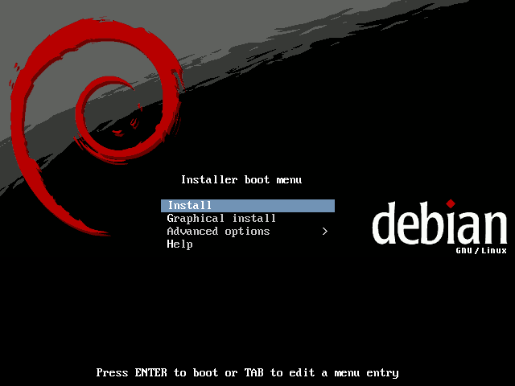I speak English so that's what I choose:

Next you choose your country. The choice of country determines the mirror which will be used for packages so answer accurately. I choose United Kingdom

Select a keyboard layout:
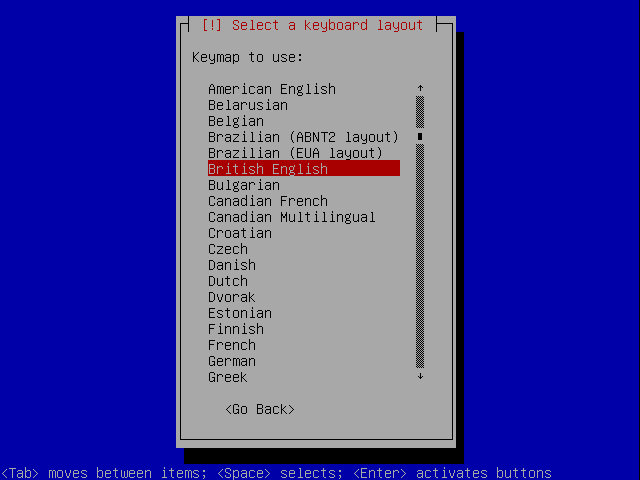Hardware drivers are loaded along with additional components, network drivers are loaded and then DHCP is configured if there is a DHCP server on the network.
 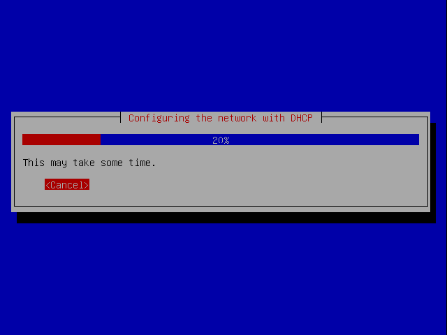
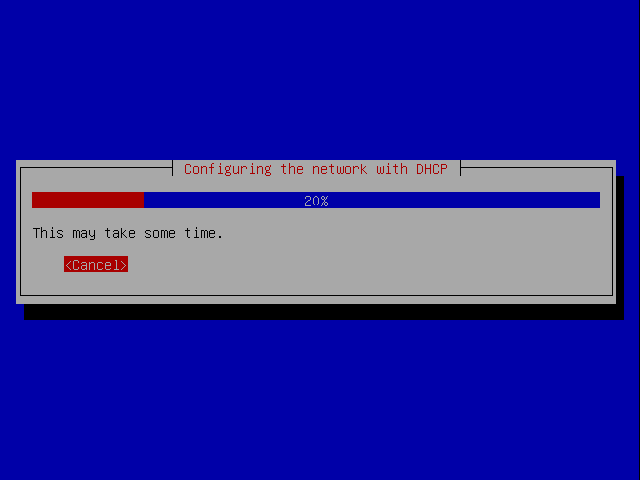
Eventually you are asked for a hostname. So that this tutorial is consistent with other tutorials such as the ones on howtoforge.com we're going to call this server server1.example.com, so you should enter server1 as the hostname:
You should choose your own hostname.

This machine is to be accessed on the internet as doppler.3aims.com. The domain is therefore 3aims.com. You should enter your own domain. The settings can be changed later but it is worth getting them right now.

The installer performs some processing including getting the current time:
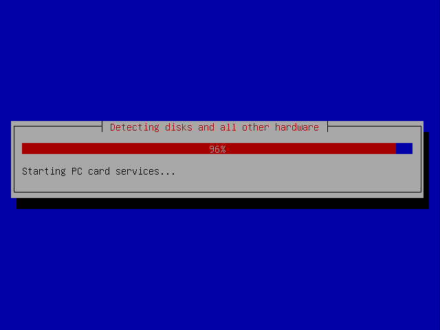Then the partitioner starts.

Partitioning Disks
Next we have to parition disks. We need at least four partitions:
- /boot
- It is always wise to have /boot as a straightforward ext3 primary partition so that you can be confident all kernels will be able to load data from them when the machine boots needing to be compiled with special drivers.
- swap
- Swap space should be 1-2x the amount of memory your server has. If the server has over 2G RAM you can usually get away with chosing a value equal to the RAM.
- /
- The root partition generally shouldn't be under LVM either so needs its own partition.
- /data
- All data will go in a LVM partition
In a production setup it is often a good idea to have lots of small partitions for the data rather than one large one. This is because using LVM you can easily create one logical volume group for them all anyway and by having lots of small partitions you have more flexibility if you ever want to change the structure of your disks.
You have a choice of which of these should be primary partitions and which should be logical partitions. From the Linux Partition HOWTO:
3.3. Primary Partitions
The number of partitions on an Intel-based system was limited from the very beginning: The original partition table was installed as part of the boot sector and held space for only four partition entries. These partitions are now called primary partitions.
3.4. Logical Partitions
One primary partition of a hard drive may be subpartitioned. These are logical partitions. This effectively allows us to skirt the historical four partition limitation.
The primary partition used to house the logical partitions is called an extended partition and it has its own file system type (0x05). Unlike primary partitions, logical partitions must be contiguous. Each logical partition contains a pointer to the next logical partition, which implies that the number of logical partitions is unlimited. However, linux imposes limits on the total number of any type of prtition on a drive, so this effectively limits the number of logical partitions. This is at most 15 partitions total on an SCSI disk and 63 total on an IDE disk.
If you do add 4 primary partitions the remaining space becomes unusable:
Because of this keep the total number of partitions below 15. For safety, the /boot partition should be within the first 1023 cylinders or 8GBytes of your hard drive. It does not matter whether /boot is a primary or logical partition. This partition will contain your bootloader and your kernel(s). A 64MB partition should be well enough for quite a few kernel generations but I've had a problem where I ran out of boot space before so to be on the safe side I'd make a production system 500MB or more. The more kernels you wish to run on it the larger you make it.
Note
As an example, a clean debain install with 2 standard Debian kernels and an OpenVZ kernel uses 35MB in the /boot directory:
# ls -lah /boot/ total 35M drwxr-xr-x 3 root root 4.0K 2009-04-18 23:18 . drwxr-xr-x 21 root root 4.0K 2009-04-18 23:19 .. -rw-r--r-- 1 root root 84K 2009-03-13 21:55 config-2.6.26-1-amd64 -rw-r--r-- 1 root root 84K 2009-03-27 07:18 config-2.6.26-2-amd64 -rw-r--r-- 1 root root 84K 2009-03-27 07:21 config-2.6.26-2-openvz-amd64 drwxr-xr-x 2 root root 4.0K 2009-04-18 23:18 grub -rw-r--r-- 1 root root 6.4M 2009-04-18 22:35 initrd.img-2.6.26-1-amd64 -rw-r--r-- 1 root root 6.4M 2009-04-18 22:36 initrd.img-2.6.26-2-amd64 -rw-r--r-- 1 root root 6.4M 2009-04-18 22:35 initrd.img-2.6.26-2-amd64.bak -rw-r--r-- 1 root root 6.4M 2009-04-18 23:18 initrd.img-2.6.26-2-openvz-amd64 -rw-r--r-- 1 root root 1.2M 2009-03-13 21:55 System.map-2.6.26-1-amd64 -rw-r--r-- 1 root root 1.2M 2009-03-27 07:18 System.map-2.6.26-2-amd64 -rw-r--r-- 1 root root 1.2M 2009-03-27 07:21 System.map-2.6.26-2-openvz-amd64 -rw-r--r-- 1 root root 1.7M 2009-03-13 21:52 vmlinuz-2.6.26-1-amd64 -rw-r--r-- 1 root root 1.7M 2009-03-27 07:18 vmlinuz-2.6.26-2-amd64 -rw-r--r-- 1 root root 1.7M 2009-03-27 07:21 vmlinuz-2.6.26-2-openvz-amd64
Since we only have 4GB of space let's partition like this. On a real server you would make larger data partitions and have more of them.
Note
At the time of writing a minimum install of Debian Lenny from the netinstall CD and with all package sets unselected (with no Standard System options either) comes in at 512Mb after first boot.
Again, I'm creating a tiny swap parititon for this example.
Traditionally, a file server uses SCSI disks, but today SATA disks offer an attractive combination of speed and low cost. At the time of this writing, 250 GB SATA drives are commonly available for around $100; for a terabyte, the cost is around $400.
SATA drives are not named like ATA drives (hda, hdb), but like SCSI (sda, sdb).
For our test we will use the following setup:
Partition ID Name Mount point/Use Size for 4GB test ========= ====== ======== =============== ================= Primary fd hda1 /boot 64Mb Primary fd hda2 Swap 128MB Primary fd hda3 / 1GB Extended 5 hda4 Logical fd hda5 Data A 1GB Logical fd hda6 Data B 1GB Logical fd hda7 Encrypted 500MB FREE Remaining Space
The example uses an encrypted parition so I can demonstrate how to use encrypted and unencrypted paritions. In a production setup it is unlikely you would need a mixture of encrypted and unencrypted volumes you could make all your data partitions encrypted or all unencrypted as you wish.
Note
Bear in mind that having an encrypted volume will mean that you need to enter your passphrase every time you reboot the machine before the SSH server is loaded. This may not be practical on a remote machine. XXX Is this true?
For a production setup you would use a partitioning scheme like this:
Partition type Name Mount point/Use Recommended for 400GB disk ============== ========= =============== ========================== Primary fd hda1 /boot 500MB Primary fd hda2 Swap 1-2x size of RAM eg 3GB Primary fd hda3 / 10GB Logical fd hda4 Data A 50GB Logical fd hda5 Data B 50GB Logical fd hda6 Data C 50GB ... ... ... ... Logical fd hda13 Data J 50GB FREE Remaining space
http://www.win.tue.nl/~aeb/partitions/partition_types-1.html
8e Linux Logical Volume Manager partition fd Linux raid partition with autodetect using persistent superblock
# fdisk -l /dev/sdd
/boot 128Mb primary swap 128Mb primary / 1000Mb primary /data_01 1000Mb logical + /data_02 1000Mb logical +-- these are in an *extended* partition /enc *Mb logical +
I also want to set up an encrypted volume so I'll do that with whatever space is available at the end.
Note
The Virtual Machine Manger installation wizard treats a KB as 1024B whereas the Debian installer treats it as 1000B so you actually have 4.2GB of space available in the Debian installer if you created a 4000Mb partition in the Virtual Machine Manger installation wizard.
http://www.linfo.org/logical_partition.html http://www.gentoo.org/doc/en/lvm2.xml
Let's get started. Here's what the screen currently looks like. We want Manual partitioning.
Select the hard drive to parition.
Note
On your server it is likely the disk will be named sda rather than hda as it is in this example.
You want to create a partition table so choose Yes:

You return to the previous screen but this time there is an empty partition list. Select the FREE SPACE and press Enter.
Select Create a new partition:
The first partition we are making is the /boot partition so enter 500 MB:
Choose to make it a Primary partition (although you could choose logical):

Choose to have it at the Beginning of the drive, although you could have it at the end too.

You will arrive at the screen below. Even though this parition will eventually be mounted as /boot you do not need to change the mountpoint.
Now set the partition to be bootable by highlighting Bootable flag and pressing Enter:
You are returned to the same screen but the bootable flag has been updated:
You want to change how this partition is used so press Enter with User as: still selected. You will see the screen below. Select physical volume for RAID:

Once again you are taken back to the previous screen. This time you are finished so select Done setting up the partition:
You are taken back to the parition table screen. The first partition is now set up.
Repeating the Process
You should now set up the root and swap partitions in the free space in exactly the same way.
The only differences for the root partition are that it will use a 1000 MB space, and not have the bootable flag set to on. The swap parition is set up in exaclty the same way as the boot parition. Again you don't need to worry about mount points or filesystems yet.
Here are the screens, setting up the swap partition:


There is no need to set the bootable flag this time so start by setting the partition type to RAID:

Here are the screens for setting up the root partition


Again, no need to set the bootable flag so start by setting the partition type to RAID:

Now let's set up the two data partitions. The procedure for both these is identical and you would repeat it for as many data partitions as you wanted. I'm only going to show you how to set up the first one:

This time, because the you already have 3 primary partitions, you need to make the next one a logical parition. If you don't the remaining free space on the drive will become unusable.
Notice this time you are not asked whether you want a primary or logical parition.

And the second data partition:
Now let's set up the partition for the encrypted data:
Once again you choose physical volume for RAID, not physical volume for encryption. We'll set up encryption in a minute.


Now the disks are set up. Let's configure RAID:
You are asked if you want to write your changes to disk. If you do, choose Yes:
Once the partition table is written to disk, let's take a detour and see how the structure actually exists on the disk.
Inspecting the Setup
Send the virtual machine a Ctrl+Alt+2 key (or press that combination if you are doing it for real):
You are asked to activate the console. Press ENTER:
You get access to a cut down shell with access to the BusyBox set of tools:
At the prompt run:
# fdisk -l /dev/hda
You'll see that all the paritions are set up with an ID of fd meaning linux raid autodetect apart from the extended partition which contains all the logical partitions after it.
Now send a Ctrl+Alt+F1 key to go back to the installer to configure RAID.
Configuring RAID
The RAID devices you create will end up as devices named /dev/md0, /dev/md1 etc. Select Create MD Device:

Now choose the RAID scheme you wish to use. There is a good article on WikiPedia explaining the different schemes and their pros and cons: http://en.wikipedia.org/wiki/Standard_RAID_levels
We are going to choose RAID 1 so that all data on the first disk is mirrored on the second. This means that if either disk fails, all the data will still be available on the other.
Such an array can only be as big as the smallest member disk.
You are asked to select the two active partitions which will be used as the RAID devices but because the second hard disk isn't added yet the second partition isn't available. Just select /dev/hda1 by pressing space and then continue:
You are returned to the main RAID menu. Repeat the process for paritions /dev/hda2, /dev/hda3, /dev/hda5, /dev/hda6, /dev/hda7, choosing : Create MD Device, RAID1, 2 active devices and 0 spares each time:
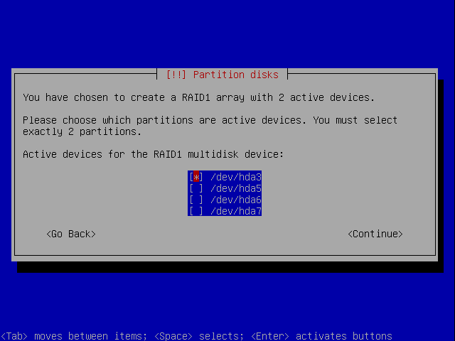If you go back to the other console and run fdisk -l and mdadm --detail --scan you'll see that the partition table hasn't changed but that the RAID devices have been created:
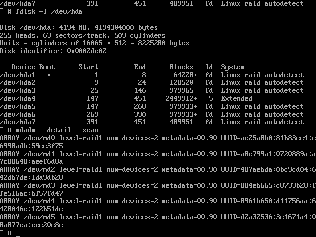Setting up Encryption
You've now set up the physical partitions and the RAID layer, now you need to set up the encryption layer.
At this point you have to decide which paritions you want to be encrypted. If you don't need encryption, I'd highly recommend not encrypting anything. It makes life much simpler and makes it easier to recover in the event of problems, after all the whole point of encryption is to make it difficult to get at your data and in a recovery situation this may not be what you want. It is possible to have encrypted root filesystem / and swap partitions in addition to encrypted data partitions. In short you can encrypt everything except /boot if you want.
Tip
If you do have an encrypted data partition it is likely that some of that data will be used in memory from time to time and could therefore be swapped to disk. If you are using an encrypted data or root parition you should therefore also encrypt your swap partition.
For our example let's set up the swap partition and /dev/hda7 as encrypted partitions.
Let's start with the swap partition. Use the down arrow to select the line under RAID1 device #1 and press ENTER.
Select Use as:
Choose physical volume for encryption.

The encryption method used is the new device mapper dm-crypt.
Select Encryption key:
Because we are going to use this as a swap partition there is no need to set a passphrase because you will never want to be able to read the data back from the swap partition between boots. You therefore select Random Key to have a different encryption key automatically used on each boot.
Select Done:
The RAID device is now listed as crypto:
Now let's set up the encryption for the encrypted partition.
Use the down arrow to select the line under RAID1 device #1 and press ENTER.
Select Use as:
Choose physical volume for encryption.
Select Done:
This time we do want to set a passphrase which will need to be entered each time the machine boots to allow access to the data on the encrypted drive. This is the default anyway so select Done:
The RAID device is now listed as crypto:

Configuring Encrypted Volumes
At this point you will see a new option called Configure encrypted volumes. Select it:
You get a warning, Select Yes if you want to write the parition table (Why are two devices listed?):
You'll get a warning, you can just ignore it though:
You'll get the same error for the second device (which doesn't exist yet anyway):
Then you are asked to earse the device #1. Select Yes if you want to erase it:
Erasing the swap drive begins and can take a few minutes, even with a small drive:
Now you get a similar warning for the encrypted volume:
The idea of writing random data over the drive is so that a potential hacker couldn't tell the difference between encrypted data and empty space, making the job of getting at the data even harder.
Now that the devices are set up you are asked to enter the password for the encrypted device (you weren't asked for a password for the swap device because you chose Random Key earlier. If you enter a password which is too weak you will see a warning. Enter a suitable password:
Caution!
It is vitally important you don't forget your passphrase, if you do, you won't be able to access any of the data on the encrypted partitions.
Confirm the password:
The partitioner starts:
Then you are taken back to the main paritioning screen, which by now should seem fairly familiar:
The RAID devices are still there, just listed lower down in the list:
You'll also notice that the installer has defaulted the swap partition to be swap and the data partition to be ext3. We want the swap partition used as such, but we don't want the encrypted partition to use ext3, we want it to be managed by LVM so we'll change this later.
Now that encryption is set send Ctrl+Alt+F2 again and type the following command:
# ls /dev/mapper
You'll see that the mappers md1_crypt and md5_crypt have been setup. You can get informtion about them like this:
# cryptsetup status /dev/mapper/md1_crypt # cryptsetup status /dev/mapper/md5_crypt
Here's the output:
Now send Ctrl+Alt+F1 to go back to the installer.
LVM Volumes
Now that the encrypted volumes are set up it is time to set up the LVM volumes. We are going to combine /dev/md3 and /dev/md4 (the two RAID 1 data partitions) into a single logical volume so that it can be treated as a single partition. We'll therefore need 3 volume groups, one for the root partition, one for the two data partitions and one for the encrypted partition. All four paritions will need to be set up for LVM.
Let's start with the root partition. Select the line under RAID1 device #2:
Select Use as:

Select physical volume for LVM:
You're done:
Now do the same for the first data device by selecting the line under RAID1 device #3: :
Select Use as:
Select physical volume for LVM:

You're done:
Now do the same for the second data device by selecting the line under RAID1 device #4: :

Select Use as:
Select physical volume for LVM:

You're done:
We also want to use LVM on the encrypted partition, so let's set it up too: Select the line under Encrypted volume (md5_crypt):
Take care not to select RAID1 device #5 by mistake or you will see this error:
The encrypted partition was defaulted to ext3 when it was created. We'll change this to LVM now. Select Use as:
Select physical volume for LVM:
You're done:
At this point you want to configure LVM but the option is off the top of the screen, use the up arrow to navigate to it and press ENTER:
You'll see this screen. Since the only changes that need to be made after configuring LVM are to set the filesystems on primary partitions for the root and /boot mount points we can continue. If you want to continue, choose Yes:
You'll see this screen:
Choose to Create a new volume group:
We're going to name the data volume groups starting with vg_. Let's start with the root parition. We'll name it vg_root:
You can now select all the volumes that should make up this group. Notice that you can also add the encrypted volume into volume group but doing this would make very little sense. Just select the /dev/md2 device and select Continue:
You are returned to this screen.
Now let's create a volume group for all the data partitions. We can later create different logical volumes on top of the combined volume group is, for example we might want a different logical volume for each virtual machine to run on the system. Select Create volume group again:
Let's call this volume group vg_data:
Select all the data partitions available. In this case they are /dev/md3 and /dev/md4.
You are returned to this screen.
Now create a volume group for the encrypted data. Select Create volume group again:
Let's call this volume group vg_encrypt:
Select the envrypted device:
You are returned to this screen.
Create Logical Volumes
Before the volume groups can be used you need to create logical volumes on top of them. You can split each volume group into as many logical volumes as you like. We're going to create one logic volume for the root partition named lv_root, one for the data names lv_data_01 and one for the encrypted parition named lv_encrypt. The lv_root and lv_encrypt will fill their respective volume groups, but lv_data_01 will only use 750Mb, we'll leave the rest of the space on that volume group free to be paritioned once you need it.
Select Create logical volume:
Let's start with lv_root. Select vg_root:
Enter the name lv_root:

We'll use the maximum size available:
You are returned to this screen.
Now do the same for the encrypted drive. Select Create logical volume:
Let's start with lv_root. Select vg_root:
Enter the name lv_root:
We'll use the maximum size available:
You are returned to this screen.
Finally let's set up the data logical volume. Select Create logical volume:
Let's start with lv_root. Select vg_root:
Enter the name lv_root:
This time change the size to 730MB:
You are returned to this screen.
Now, with the logical volumes set up, you can select Finish.
Once again the paritioner starts:
and you are taken back to the main paritioner screen:

Filesystems and Mount Points
Now we need to set up the filesystems and mount points. Let's take them in turn.
/boot
The /boot filesystem is to be mounted directly on the /dev/md0 RAID1 device. Scroll down and select the boot partition:
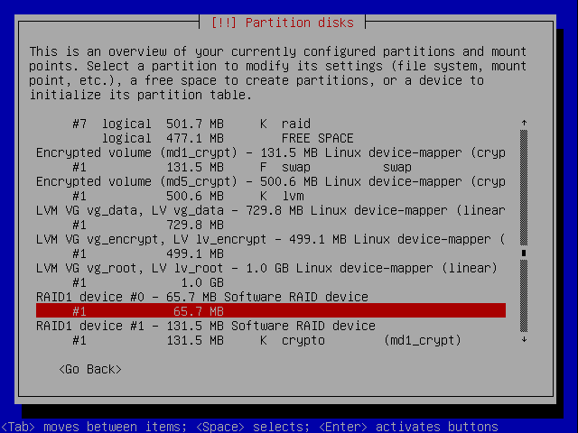Select Use as::
Choose to use the Ext3 journaling file system. Whilst it is technically possible to choose other filesystems for the /boot partition, I strongly recommend you use ext3 because support will already be built into standard kernels. If you use something like XFS you may find you need to recompile support into your kernels in order to get the system to boot. Using ext3 also makes any rescue you have to perform easier since the drivers are more likely to be available on a rescue disk:
/
Now let's set up the / mount point:
Be sure to select rather than RAID Device #2 or you'll get this message:
Now select Use as:
If you prefer to select a different filesystem such as Xfs for the root partition, feel free to do so. I'm using Ext3 here:
/data
Now let's set up the /data mount point:
Now select Use as:

If you prefer to select a different filesystem such as Xfs for the root partition, feel free to do so. I'm using Ext3 here:

 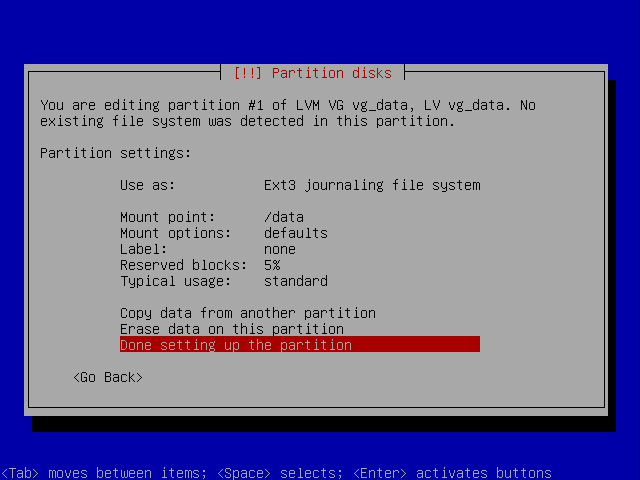
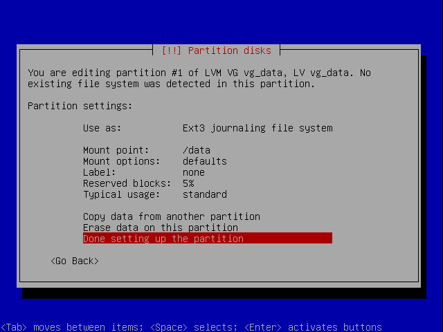
Finally let's set up the /encrypt mount point.
Make sure you select the vg_encrypt volume group, not Encrypted volume md5_crypt or you'll see this error:

swap
The swap partition is already set up so it needs no further attention:
Finsih Partitioning
You can now finsih the partitioning. Scroll all the way to the bottom:
You are given a summary, if you want to proceed, choose Yes:
You are shown a warning again, this can be safely ignored. You'll reboot shortly:

The filesystems are created:
Parition Summary
With all the partitioning done, the set up is as follows:
| Mount Points | /boot | / | /data | FREE | FREE | /encrypt | |
|---|---|---|---|---|---|---|---|
| Filesystems | ext3 | swap | ext3 | ext3 | None | None | ext3 |
| LVM Volumes | /dev/vg_root | /dev/lv_data_01 | FREE | FREE | /dev/lv_encrypt | ||
| LVM Volume Groups | /dev/vg_root | /dev/vg_data | /dev/vg_encrypt | ||||
| Encrypted Volumes | /dev/mapper/md1_crypt | /dev/mapper/md5_crypt | |||||
| RAID Devices | /dev/md0 | /dev/md1 | /dev/md2 | /dev/md3 | /dev/md4 | /dev/md5 | |
| Drive Partitions | /dev/hda1 | /dev/hda2 | /dev/hda3 | /dev/hda5 | /dev/hda6 | /dev/hda7 | |
Base Install
The base system now installs:

Users
Enter a root password:

and confirm it:
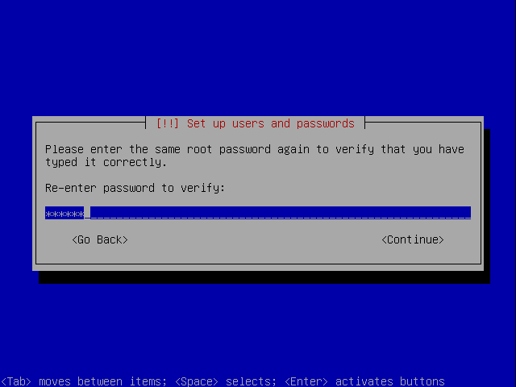Now you need to set up a username and password for an ordinary user. First enter their name:
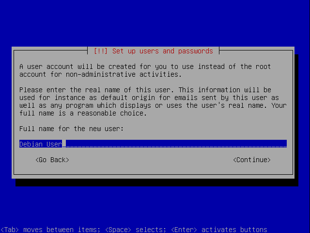Then choose a username:

Next choose a password:

and confirm it:

Mirrors
Let Debian know the country you are in so it can suggest a mirror nearby:

Now select a mirror from one of the options:
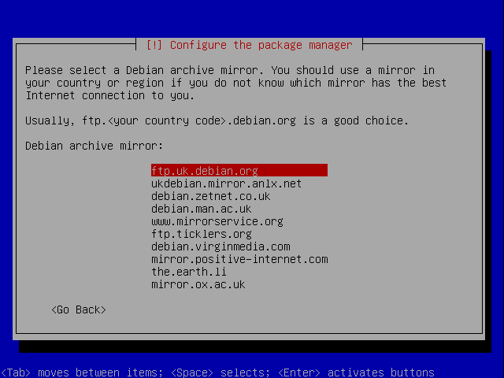Proxy
If you access the internet through a proxy, enter the details now. I don't so I leave it blank:
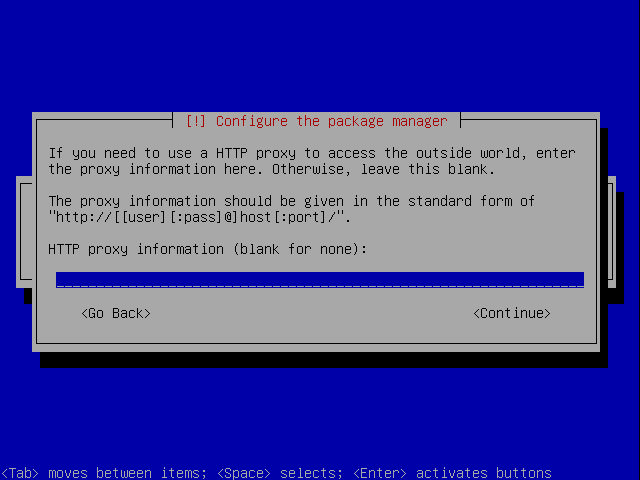Apt is configured:

Apt downloads and installs any updates you need. This can take a few minutes.
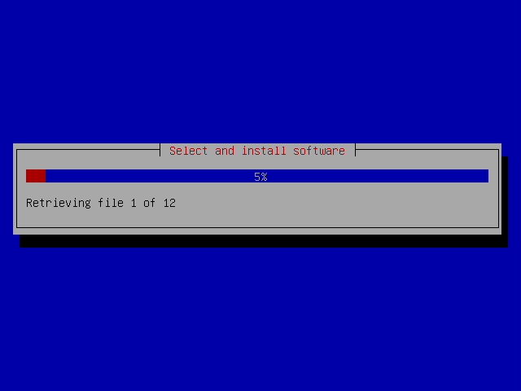The post install scripts run:

You are given the choice of participating in the popularity contest.

System Packages
You are asked which packages to install but we don't want the default. Unselect Statndard System, we'll install everything we want ourselves.
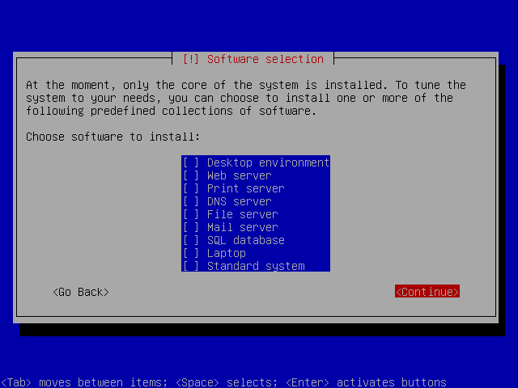New packages are downloaded:

You are asked if you want to install Grub:
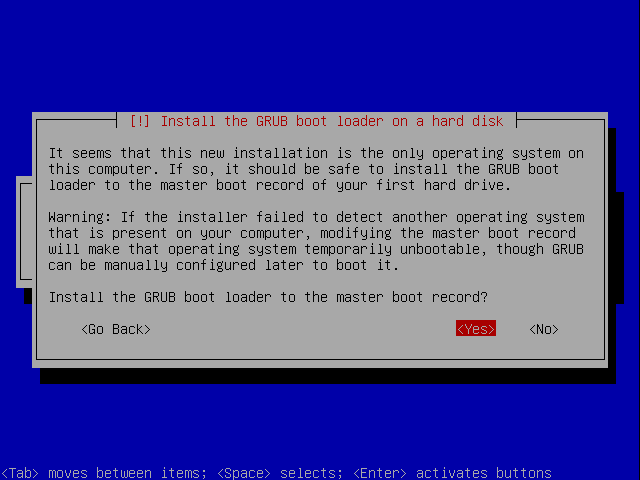Grub is installed:

Final changes are made:
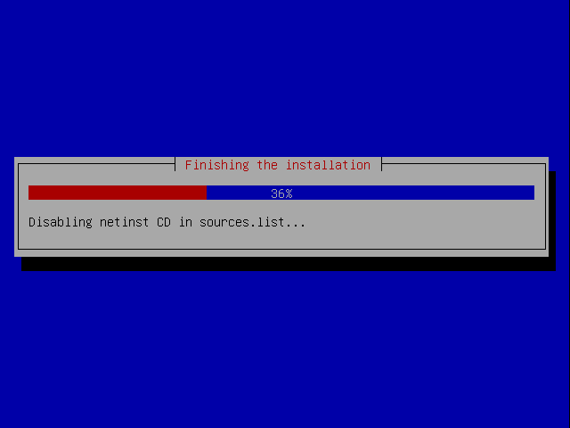The installation is finished:

information is gathered for the final report:
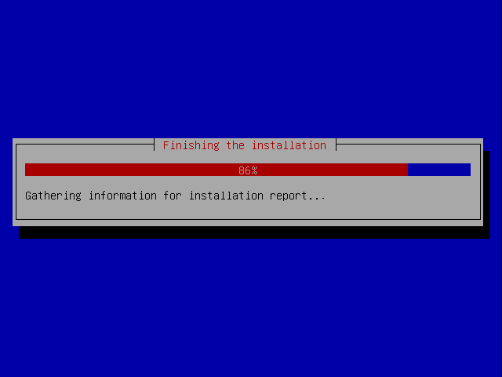The system reboots:

Now add the second disk and reboot.

Notice that the system recognises only one disk of the RAID array is present:
On each boot you'll have to enter the passphrase you set up for the encrypted partition, this is why having a remote server with any encrypted partition using a passphrase can be problematic unless you have a serial console.
Enter the password. If you make a mistake you'll see this:
My password was password, so when I entere it I see this:

Now login as root with the password you set up earlier:
First of all it is far easier to install from an SSH console rather than in the Virtual Machine Manager because you can copy and paste commands.
See the Set up OpenSSH Server article.
Now continue the tutorial.
Install openssh-server:
# apt-get install openssh-server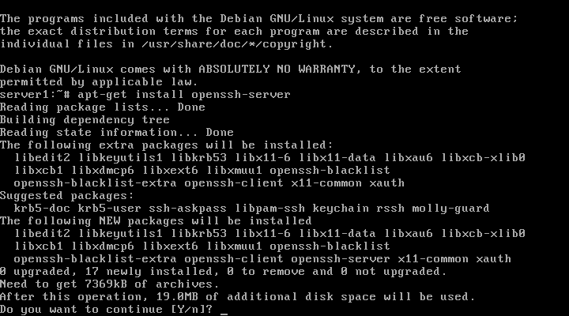
This uses 19Mb of space. Press ENTER to continue.
You can find out the IP address with ifconfig. In my case with KVM it is 192.168.122.82. From a console on your computer connect like this:
james@dirac:~$ ssh root@192.168.122.82 The authenticity of host '192.168.122.82 (192.168.122.82)' can't be established. RSA key fingerprint is 85:2d:25:af:9c:af:27:6b:73:61:af:37:ce:d5:7f:25. Are you sure you want to continue connecting (yes/no)? yes Warning: Permanently added '192.168.122.82' (RSA) to the list of known hosts. root@192.168.122.82's password:
Enter the root password and you'll see this:
Linux server1 2.6.26-2-amd64 #1 SMP Fri Mar 27 04:02:59 UTC 2009 x86_64 The programs included with the Debian GNU/Linux system are free software; the exact distribution terms for each program are described in the individual files in /usr/share/doc/*/copyright. Debian GNU/Linux comes with ABSOLUTELY NO WARRANTY, to the extent permitted by applicable law. Last login: Mon Apr 20 00:19:22 2009 server1:~#
Now you can copy and paste commands into the terminal, without having to type out each command in full.
Before I start altering the partition table of the second drive I frist check that status of the array by issuing this command
watch -n 6 cat /proc/mdstat
The output looks like this and refreshes every 6 seconds:
Every 6.0s: cat /proc/mdstat Mon Apr 20 00:25:16 2009
Personalities : [raid1]
md5 : active raid1 hda7[0]
489856 blocks [2/1] [U_]
md4 : active (auto-read-only) raid1 hda6[0]
979840 blocks [2/1] [U_]
md3 : active raid1 hda5[0]
979840 blocks [2/1] [U_]
md2 : active raid1 hda3[0]
979840 blocks [2/1] [U_]
md1 : active raid1 hda2[0]
128448 blocks [2/1] [U_]
md0 : active raid1 hda1[0]
64128 blocks [2/1] [U_]
unused devices: <none>
As you can see, only one of the two active raid devices are currently used. This means I can (should) add another one to make sure that if one disk fails everything is still operational. Exit the montioring with "ctrl-c".
I have to find out which harddrive is which (what they are named). I issue:
server1:~# fdisk -l Disk /dev/hda: 4194 MB, 4194304000 bytes 255 heads, 63 sectors/track, 509 cylinders Units = cylinders of 16065 * 512 = 8225280 bytes Disk identifier: 0x0002dc02 Device Boot Start End Blocks Id System /dev/hda1 * 1 8 64228+ fd Linux raid autodetect /dev/hda2 9 24 128520 fd Linux raid autodetect /dev/hda3 25 146 979965 fd Linux raid autodetect /dev/hda4 147 451 2449912+ 5 Extended /dev/hda5 147 268 979933+ fd Linux raid autodetect /dev/hda6 269 390 979933+ fd Linux raid autodetect /dev/hda7 391 451 489951 fd Linux raid autodetect Disk /dev/hdb: 4194 MB, 4194304000 bytes 255 heads, 63 sectors/track, 509 cylinders Units = cylinders of 16065 * 512 = 8225280 bytes Disk identifier: 0x00000000 Disk /dev/hdb doesn't contain a valid partition table Disk /dev/md0: 65 MB, 65667072 bytes 2 heads, 4 sectors/track, 16032 cylinders Units = cylinders of 8 * 512 = 4096 bytes Disk identifier: 0x00000000 Disk /dev/md0 doesn't contain a valid partition table Disk /dev/md1: 131 MB, 131530752 bytes 2 heads, 4 sectors/track, 32112 cylinders Units = cylinders of 8 * 512 = 4096 bytes Disk identifier: 0xa7838a99 Disk /dev/md1 doesn't contain a valid partition table Disk /dev/md2: 1003 MB, 1003356160 bytes 2 heads, 4 sectors/track, 244960 cylinders Units = cylinders of 8 * 512 = 4096 bytes Disk identifier: 0x00000000 Disk /dev/md2 doesn't contain a valid partition table Disk /dev/md3: 1003 MB, 1003356160 bytes 2 heads, 4 sectors/track, 244960 cylinders Units = cylinders of 8 * 512 = 4096 bytes Disk identifier: 0x00000000 Disk /dev/md3 doesn't contain a valid partition table Disk /dev/md4: 1003 MB, 1003356160 bytes 2 heads, 4 sectors/track, 244960 cylinders Units = cylinders of 8 * 512 = 4096 bytes Disk identifier: 0x00000000 Disk /dev/md4 doesn't contain a valid partition table Disk /dev/md5: 501 MB, 501612544 bytes 2 heads, 4 sectors/track, 122464 cylinders Units = cylinders of 8 * 512 = 4096 bytes Disk identifier: 0x08040000 Disk /dev/md5 doesn't contain a valid partition table Disk /dev/dm-0: 1002 MB, 1002438656 bytes 255 heads, 63 sectors/track, 121 cylinders Units = cylinders of 16065 * 512 = 8225280 bytes Disk identifier: 0x00000000 Disk /dev/dm-0 doesn't contain a valid partition table Disk /dev/dm-1: 131 MB, 131530752 bytes 255 heads, 63 sectors/track, 15 cylinders Units = cylinders of 16065 * 512 = 8225280 bytes Disk identifier: 0x5e1bbddf Disk /dev/dm-1 doesn't contain a valid partition table Disk /dev/dm-2: 500 MB, 500559872 bytes 255 heads, 63 sectors/track, 60 cylinders Units = cylinders of 16065 * 512 = 8225280 bytes Disk identifier: 0x00000000 Disk /dev/dm-2 doesn't contain a valid partition table Disk /dev/dm-3: 729 MB, 729808896 bytes 255 heads, 63 sectors/track, 88 cylinders Units = cylinders of 16065 * 512 = 8225280 bytes Disk identifier: 0x00000000 Disk /dev/dm-3 doesn't contain a valid partition table Disk /dev/dm-4: 499 MB, 499122176 bytes 255 heads, 63 sectors/track, 60 cylinders Units = cylinders of 16065 * 512 = 8225280 bytes Disk identifier: 0x00000000 Disk /dev/dm-4 doesn't contain a valid partition table server1:~#
From this you can see that /dev/hda is the drive we setup and /dev/sdb is the new drive. View the parition table of /dev/hda like this:
server1:~# sfdisk -d /dev/hda # partition table of /dev/hda unit: sectors /dev/hda1 : start= 63, size= 128457, Id=fd, bootable /dev/hda2 : start= 128520, size= 257040, Id=fd /dev/hda3 : start= 385560, size= 1959930, Id=fd /dev/hda4 : start= 2345490, size= 4899825, Id= 5 /dev/hda5 : start= 2345553, size= 1959867, Id=fd /dev/hda6 : start= 4305483, size= 1959867, Id=fd /dev/hda7 : start= 6265413, size= 979902, Id=fd For an idea about what is missing have a look at the tasksel wiki: http://wiki.debian.org/tasksel
Apply it to /dev/hdb like this:
server1:~# sfdisk -d /dev/hda | sfdisk /dev/hdb Checking that no-one is using this disk right now ... OK Disk /dev/hdb: 509 cylinders, 255 heads, 63 sectors/track sfdisk: ERROR: sector 0 does not have an msdos signature /dev/hdb: unrecognized partition table type Old situation: No partitions found New situation: Units = sectors of 512 bytes, counting from 0 Device Boot Start End #sectors Id System /dev/hdb1 * 63 128519 128457 fd Linux raid autodetect /dev/hdb2 128520 385559 257040 fd Linux raid autodetect /dev/hdb3 385560 2345489 1959930 fd Linux raid autodetect /dev/hdb4 2345490 7245314 4899825 5 Extended /dev/hdb5 2345553 4305419 1959867 fd Linux raid autodetect /dev/hdb6 4305483 6265349 1959867 fd Linux raid autodetect /dev/hdb7 6265413 7245314 979902 fd Linux raid autodetect Successfully wrote the new partition table Re-reading the partition table ... If you created or changed a DOS partition, /dev/foo7, say, then use dd(1) to zero the first 512 bytes: dd if=/dev/zero of=/dev/foo7 bs=512 count=1 (See fdisk(8).)
Zeroing the Superblock
Just to make sure we zero out the superblock on each partition on the new drive:
server1:~# mdadm --zero-superblock /dev/hdb1 mdadm: Unrecognised md component device - /dev/hdb1 server1:~# mdadm --zero-superblock /dev/hdb2 mdadm: Unrecognised md component device - /dev/hdb2 server1:~# mdadm --zero-superblock /dev/hdb3 mdadm: Unrecognised md component device - /dev/hdb3 server1:~# mdadm --zero-superblock /dev/hdb5 mdadm: Unrecognised md component device - /dev/hdb5 server1:~# mdadm --zero-superblock /dev/hdb6 mdadm: Unrecognised md component device - /dev/hdb6 server1:~# mdadm --zero-superblock /dev/hdb7 mdadm: Unrecognised md component device - /dev/hdb7
You will get a lot of errors - which according to Howtoforge is good if it's a new drive that has not been used before.
Adding the New Partitions to the RAID Array
Now run those commands:
server1:~# mdadm --add /dev/md0 /dev/hdb1 mdadm: added /dev/hdb1 server1:~# mdadm --add /dev/md1 /dev/hdb2 mdadm: added /dev/hdb2 server1:~# mdadm --add /dev/md2 /dev/hdb3 mdadm: added /dev/hdb3 server1:~# mdadm --add /dev/md3 /dev/hdb5 mdadm: added /dev/hdb5 server1:~# mdadm --add /dev/md4 /dev/hdb6 mdadm: added /dev/hdb6 server1:~# mdadm --add /dev/md5 /dev/hdb7 mdadm: added /dev/hdb7
Monitoring the RAID Re-Build
Every 6.0s: cat /proc/mdstat Mon Apr 20 00:35:56 2009
Personalities : [raid1]
md5 : active raid1 hdb7[2] hda7[0]
489856 blocks [2/1] [U_]
resync=DELAYED
md4 : active raid1 hdb6[2] hda6[0]
979840 blocks [2/1] [U_]
resync=DELAYED
md3 : active raid1 hdb5[2] hda5[0]
979840 blocks [2/1] [U_]
resync=DELAYED
md2 : active raid1 hdb3[2] hda3[0]
979840 blocks [2/1] [U_]
resync=DELAYED
md1 : active raid1 hdb2[2] hda2[0]
128448 blocks [2/1] [U_]
[============>........] recovery = 64.2% (83648/128448) finish=0.0min spe
ed=11949K/sec
Every 6.0s: cat /proc/mdstat Mon Apr 20 00:36:15 2009
Personalities : [raid1]
md5 : active raid1 hdb7[2] hda7[0]
489856 blocks [2/1] [U_]
[====>................] recovery = 20.0% (99264/489856) finish=1.0min spe
ed=6204K/sec
md4 : active raid1 hdb6[2] hda6[0]
979840 blocks [2/1] [U_]
resync=DELAYED
md3 : active raid1 hdb5[2] hda5[0]
979840 blocks [2/1] [U_]
resync=DELAYED
md2 : active raid1 hdb3[2] hda3[0]
979840 blocks [2/1] [U_]
resync=DELAYED
md1 : active raid1 hdb2[1] hda2[0]
128448 blocks [2/2] [UU]
md0 : active raid1 hdb1[1] hda1[0]
64128 blocks [2/2] [UU]
unused devices: <none>
Every 6.0s: cat /proc/mdstat Mon Apr 20 00:37:38 2009
Personalities : [raid1]
md5 : active raid1 hdb7[1] hda7[0]
489856 blocks [2/2] [UU]
md4 : active raid1 hdb6[2] hda6[0]
979840 blocks [2/1] [U_]
resync=DELAYED
md3 : active raid1 hdb5[2] hda5[0]
979840 blocks [2/1] [U_]
resync=DELAYED
md2 : active raid1 hdb3[2] hda3[0]
979840 blocks [2/1] [U_]
[====>................] recovery = 22.5% (221184/979840) finish=1.1min sp
eed=10532K/sec
md1 : active raid1 hdb2[1] hda2[0]
128448 blocks [2/2] [UU]
md0 : active raid1 hdb1[1] hda1[0]
64128 blocks [2/2] [UU]
unused devices: <none>
Every 6.0s: cat /proc/mdstat Mon Apr 20 00:39:02 2009
Personalities : [raid1]
md5 : active raid1 hdb7[1] hda7[0]
489856 blocks [2/2] [UU]
md4 : active raid1 hdb6[2] hda6[0]
979840 blocks [2/1] [U_]
resync=DELAYED
md3 : active raid1 hdb5[2] hda5[0]
979840 blocks [2/1] [U_]
[=>...................] recovery = 7.1% (70592/979840) finish=2.5min spe
ed=5882K/sec
md2 : active raid1 hdb3[1] hda3[0]
979840 blocks [2/2] [UU]
md1 : active raid1 hdb2[1] hda2[0]
128448 blocks [2/2] [UU]
md0 : active raid1 hdb1[1] hda1[0]
64128 blocks [2/2] [UU]
unused devices: <none>
Every 6.0s: cat /proc/mdstat Mon Apr 20 00:42:53 2009
Personalities : [raid1]
md5 : active raid1 hdb7[1] hda7[0]
489856 blocks [2/2] [UU]
md4 : active raid1 hdb6[2] hda6[0]
979840 blocks [2/1] [U_]
[=======>.............] recovery = 35.4% (347136/979840) finish=1.5min sp
eed=6720K/sec
md3 : active raid1 hdb5[1] hda5[0]
979840 blocks [2/2] [UU]
md2 : active raid1 hdb3[1] hda3[0]
979840 blocks [2/2] [UU]
md1 : active raid1 hdb2[1] hda2[0]
128448 blocks [2/2] [UU]
md0 : active raid1 hdb1[1] hda1[0]
64128 blocks [2/2] [UU]
unused devices: <none>
Then eventually:
Every 6.0s: cat /proc/mdstat Mon Apr 20 00:44:48 2009
Personalities : [raid1]
md5 : active raid1 hdb7[1] hda7[0]
489856 blocks [2/2] [UU]
md4 : active raid1 hdb6[1] hda6[0]
979840 blocks [2/2] [UU]
md3 : active raid1 hdb5[1] hda5[0]
979840 blocks [2/2] [UU]
md2 : active raid1 hdb3[1] hda3[0]
979840 blocks [2/2] [UU]
md1 : active raid1 hdb2[1] hda2[0]
128448 blocks [2/2] [UU]
md0 : active raid1 hdb1[1] hda1[0]
64128 blocks [2/2] [UU]
unused devices: <none>
The RAID re-build is complete.
Add Grub to the New Hard Drive
Grub is not mirrored by onto the new hard drive apparantly so we have to manually add it. Run:
# grub
Then run in the grub prompt:
- ::
- grub> root (hd1,0) grub> setup (hd1)
The first command means that grub shall use the partition /dev/hdb1 as /boot partition. The second command means that grub shall install itself into the boot sector of /dev/hdb. Grub start counting hard drives and partitions with "0". So hda would be hd0 and hence hdb is hd1
Here's the output:
server1:~# grub
Probing devices to guess BIOS drives. This may take a long time.
GNU GRUB version 0.97 (640K lower / 3072K upper memory)
[ Minimal BASH-like line editing is supported. For
the first word, TAB lists possible command
completions. Anywhere else TAB lists the possible
completions of a device/filename. ]
grub> root (hd1,0)
root (hd1,0)
Filesystem type is ext2fs, partition type 0xfd
grub> setup (hd1)
setup (hd1)
Checking if "/boot/grub/stage1" exists... no
Checking if "/grub/stage1" exists... yes
Checking if "/grub/stage2" exists... yes
Checking if "/grub/e2fs_stage1_5" exists... yes
Running "embed /grub/e2fs_stage1_5 (hd1)"... 17 sectors are embedded.
succeeded
Running "install /grub/stage1 d (hd1) (hd1)1+17 p (hd0,0)/grub/stage2 /grub/menu.lst"... succeeded
Done.
grub>
Don't worry that Grub thinks your filesystem is ext2fs.
Exit grub by entering "quit":
grub> quit quit server1:~#
You have now an encrypted RAID1 setup with LVM. Each partition can be run alone.
It worked! More resources:
- http://linux-raid.osdl.org/index.php/Growing
- http://www.howtoforge.com/perfect-server-debian-lenny-ispconfig3
- http://www.howtoforge.com/set-up-a-fully-encrypted-raid1-lvm-system-p6
- http://en.wikipedia.org/wiki/Logical_disk
- http://en.wikipedia.org/wiki/Standard_RAID_levels
- http://www.linuxdevcenter.com/pub/a/linux/2006/04/27/managing-disk-space-with-lvm.html
- http://www.ducea.com/2009/03/08/mdadm-cheat-sheet/
- http://en.gentoo-wiki.com/wiki/DM-Crypt